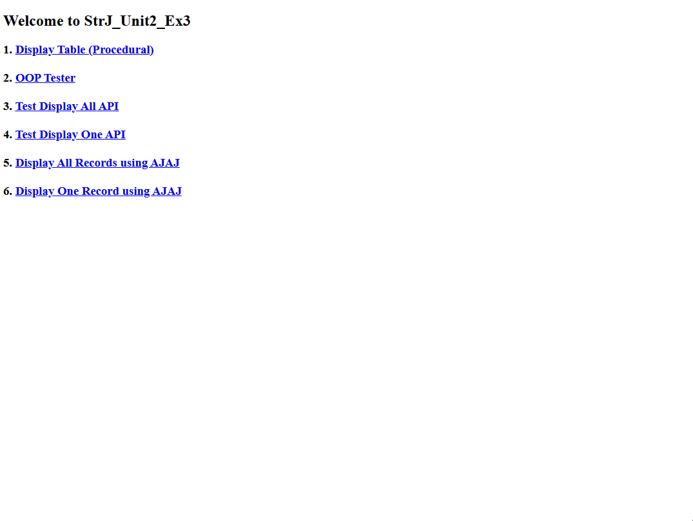
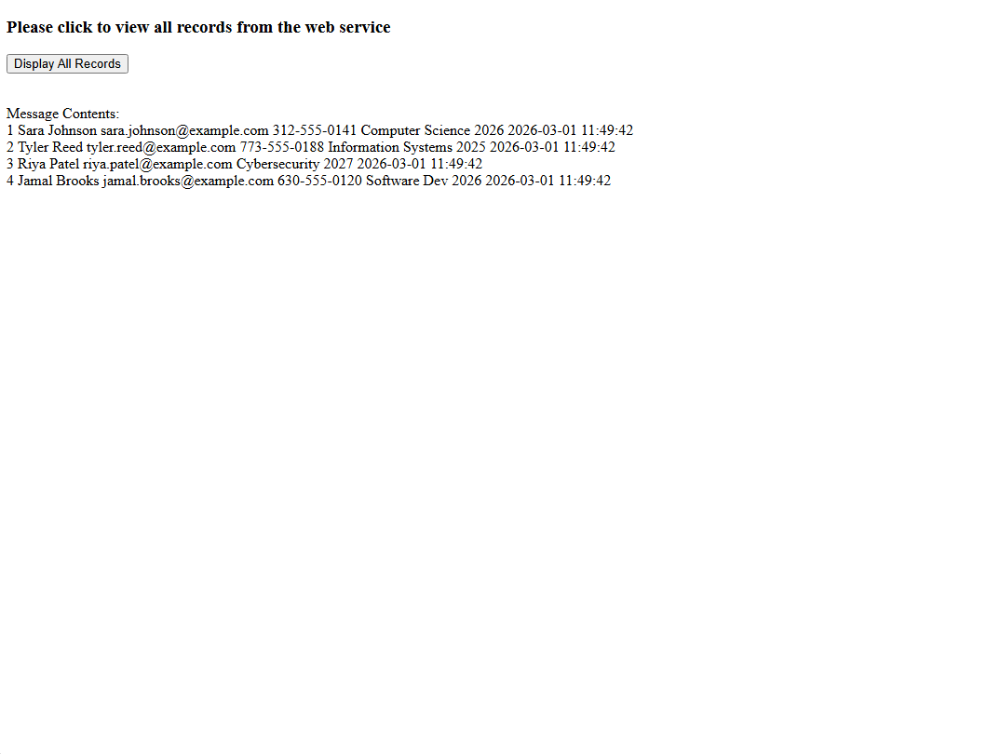
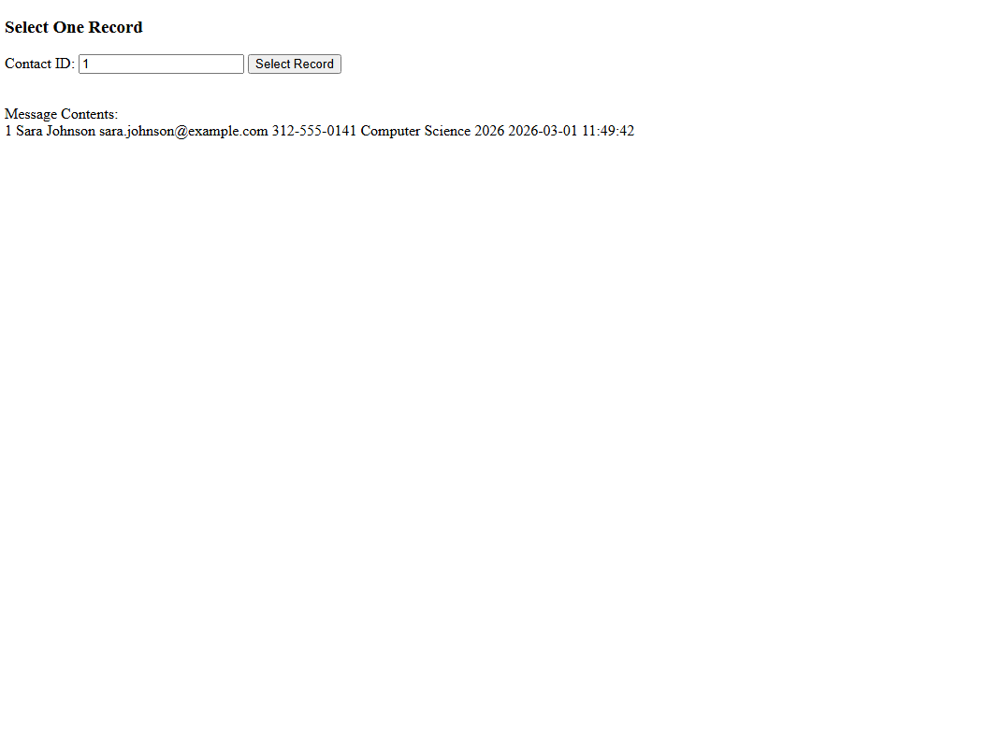

The RESTful Student Contacts Service is a PHP/MySQL web service project built for CIS 266. The project demonstrates how a server-side PHP application can connect to a MySQL database, retrieve student contact records, encode the results as JSON, and make that data available to client-side pages through REST-style endpoints.
The application includes both service-provider files and service-client files. The provider side handles database access and JSON output, while the client side uses jQuery AJAX requests to display all records or retrieve one selected record by contact ID. The project also includes basic tester pages for directly testing the API endpoints in the browser.
studentscontact_idjson_encode()
This sample shows the PHP API endpoint used to retrieve one student contact record.
The script reads the contact_id value from the query string, checks that
the value was provided, queries the database through the database access class, and
returns either the matching record or an error message as JSON.
<?php
include_once("class_lib/StrJDB_Access.php");
$DB_Access = new StrJDB_Access();
$table = "strj_unit2_ex1_contacts";
$contact_id = $_GET['contact_id'] ?? "";
if ($contact_id === "") {
print(json_encode(array("error" => "contact_id parameter is required")));
exit;
}
$DB_Result = $DB_Access->selectOne($table, $contact_id);
if ($DB_Result && $row = $DB_Result->fetch_assoc()) {
print(json_encode($row));
} else {
print(json_encode(array("error" => "Record not found")));
}
?>This endpoint represents the main service pattern used in the project: receive a request parameter, call a database method, convert the result to JSON, and return that JSON response to a browser-based client.


